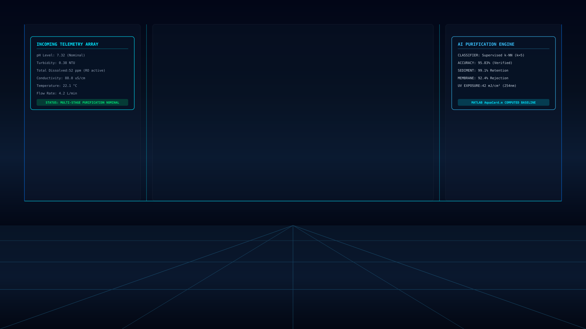

THE FUTURE OF INTELLIGENT WATER PURIFICATION
An interactive academic presentation demonstrating how Artificial Intelligence, multi-parametric sensor diagnostics, automated sequential purification, and MATLAB scientific computing unite to advance smart water monitoring and sustainable management.
Thank you for joining our demonstration. AQUACARD illustrates how explainable machine learning (k-NN 95.83% accuracy), multi-sensor diagnostics, closed-loop hydraulic control, and verified MATLAB modeling lay the conceptual groundwork for the next generation of resilient water purification systems.